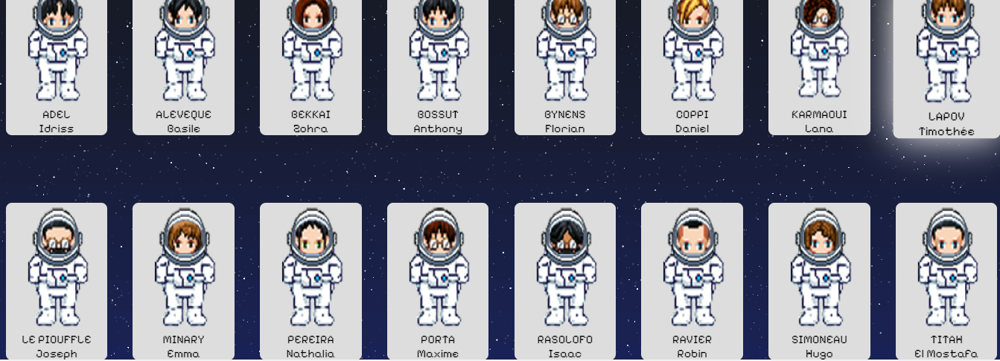
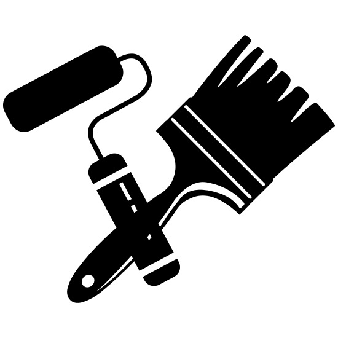
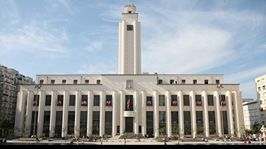
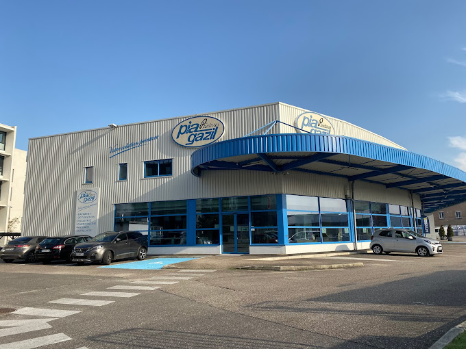
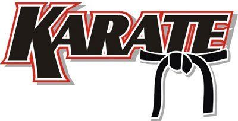

Mon site WEB CV
Présentation
Portrait Professionnel

Accroche
Je suis Robin RAVIER (22 ans), actuellement en formation de Développeur Web/Web mobile chez Human Booster à Villeurbanne. Auparavant j’ai réalisé mon service civique au sein de Pôle Emploi Villeurbanne en tant qu’ambassadeur du numérique, ce qui m'a permis d'acquérir des compétences d'entreprises. En ce moment j’étudie des langages informatiques et mon projet professionnel est de devenir Développeur Web et par la suite Développeur Jeux Vidéos.
Coordonnées
- Domicile: Villeurbanne (69100)
- Age: 22 ans
- Mobilité: Permis B (Véhicule personnel)
Projet
Mes projets réalisés
En formation : J’ai réalisé un projet collectif qui présente notre équipe (site en local pour le moment). Nous avons choisi un thème sur l’espace et notre équipe était représentée sous forme d’astronautes et notre formation étant notre voyage spatial.
Perso : J'ai réalisé mon portefolio sur github :

Mes projets futurs
Professionnel et Perso : Créer des jeux vidéos
Professionnel et Perso : Créer des sites WEB

Compétences
Compétences Informatiques


Compétences Transverses
Réaliser une veille sur les nouveautés en termes de technologie et de développement web
Comprendre les besoins utilisateurs
Étudier une demande client
Travailler en autonomie
Intégrer une équipe rapidement
Prévenir et gérer des conflits
Expériences
Formation et Diplôme

BAC ES : 2019
DEVELOPPEUR WEB/WEB Mobile Titre de niveau 5 (bac+2) inscrit au RNCP : De novembre 2023 à novembre 2024
Expériences Professionnelles
Service Civique: De juin 2022 à janvier 2023 au Pôle Emploi Villeurbanne [ - Ambassadeur du numérique - Accueillir divers publics - Compréhension de la demande du client - Utilisation des outils Pôle Emploi (système informatique et bureautique)]

Peintre en bâtiment: De mai 2021 à août 2021 chez RAVIER Peinture Villeurbanne [ - Techniques de peinture (pinceau, rouleau) - Respecter la sécurité sur un chantier (chaussures de sécurité, casque) - Respecter la propreté des lieux (protéger le sol)]
Stage: De juin 2016 à juillet 2016 à la Mairie de Villeurbanne (direction des sports) [ - Observation du métier d’éducateur sportif (ETAPS) - Animation avec des enfants (natation, football et escalade) - Sécurité et gestion du matériel - Administration]
Stage: De février 2015 à mars 2015 chez PIA GASIL Villeurbanne [ - Coloriste - Accueil clientèle - Rangement dépôt, mise en rayon]
Centres d'intérêt
Jeux Vidéos
- PS5 (33 trophées platines)
- PC
- Switch
Sports
-

- Karaté (ceinture noire)
- MMA
- Natation